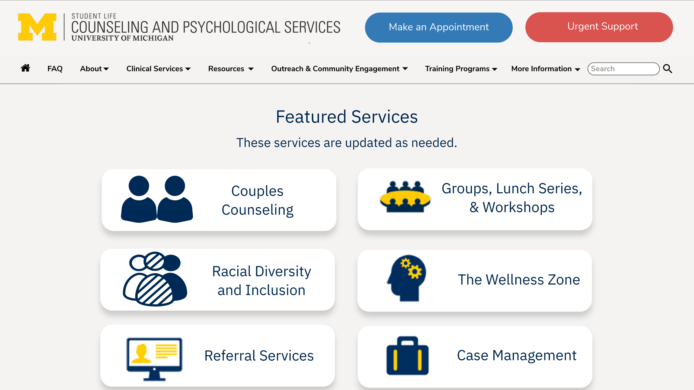
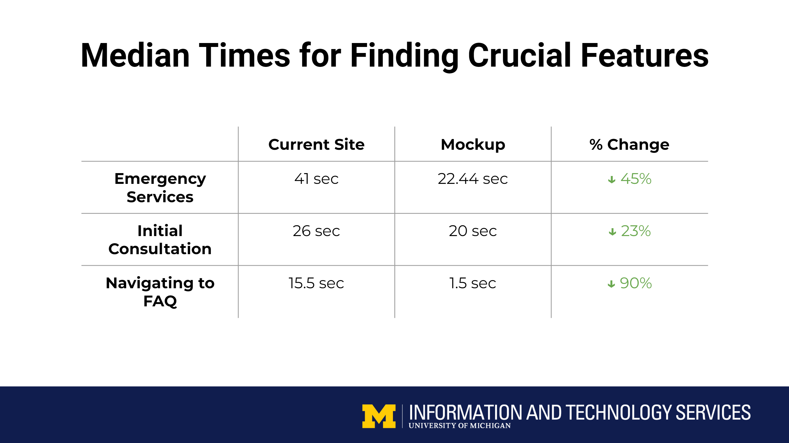
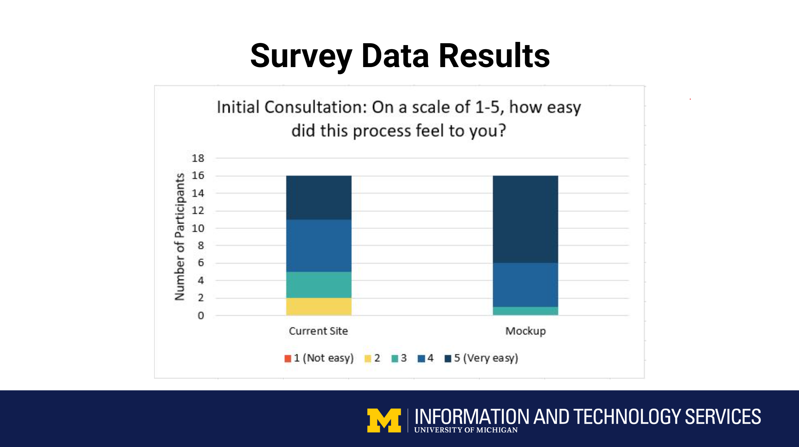
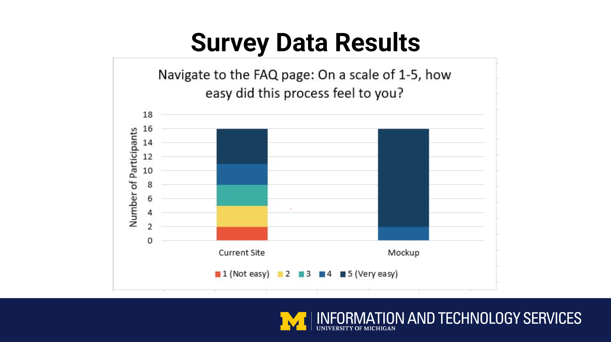
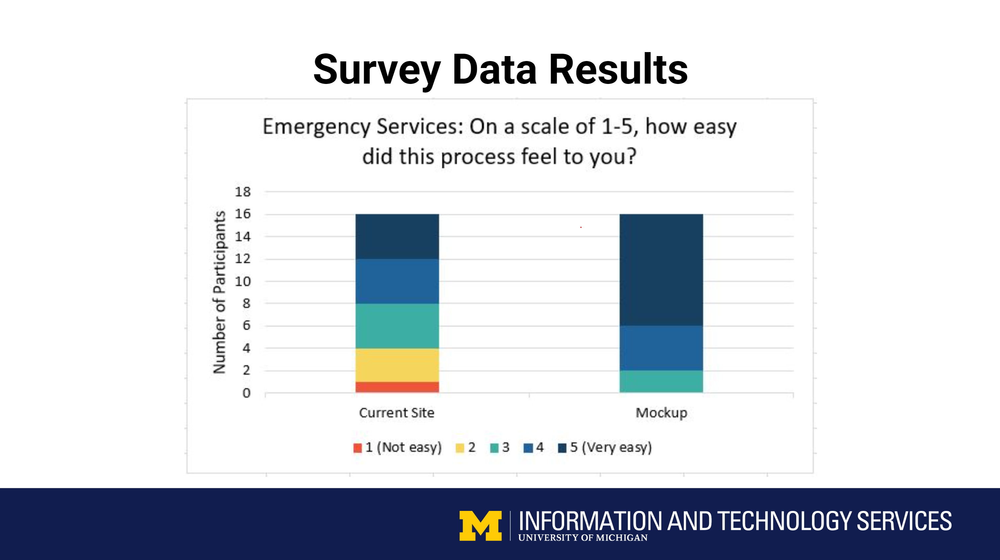

-
Overview
-
CAPS nurtures the psychological development and emotional well-being of students through counseling, therapy, preventative and educational programming, outreach and consultation. The CAPS website redesign was initiated at the start of the COVID-19 pandemic, when the challenge to transition what are traditionally face-to-face services to an online format was met with a marked increase in need for psychological support services; students faced academic disruption, social isolation, dislocation, loss, and fear about health and the future.
-
For our ITS Summer 2020 Internship cohort project (all virtual), our 5 person team independently conceived of, pitched, and executed a redesign of the CAPS website with the goal of making it easier, quicker and less stressful for our already highly distressed peers to identify what services CAPS could offer and to navigate access to those resources. We realized we all had experience with peers sharing frustration about securing mental health services when needed. In addition, we noticed a number of issues and points of confusion with the existing CAPS website. CAPS encouraged and supported our efforts. Our team was the only Intern cohort to tackle a project outside of ITS.
-
To improve the potential of the website to serve the needs and enhance the emotional well being of students, we recreated the website from the ground up (e.g., consolidating redundant information, assessing which pages were visited most and then making it easier to get to those pages, and making sure students could access emergency services no matter which page they were on). We focused on feedback which was deemed the most important by user research conducted with students, and by members of the CAPS staff whom we interviewed. My primary roles in the project included being the Project Manager (using Agile development practices) and UX Researcher/Designer.
- CAPS website redesign mockup
-

CAPS website, pre-redesign
-

CAPS website, post-redesign
-
This pre-post website redesign of the CAPS Homepage illustrates one of the primary design goals of our project: to help stressed, distressed, and overwhelmed students access mental health services more quickly and easily. We placed the “Make an Appointment” and “Urgent Support” buttons on the top of every page, each with a more prominent, distinct shape, which the user's eye is immediately drawn to, without interference from any other elements on the Home and Secondary pages.
Outcome
Created a Website Redesign prototype of the CAPS website, to increase ease of use/accessibility to mental health resources.
Client
The University of Michigan's Counseling and Psychological Services
Type
UX Research, UX Design, Product Consultation
Date
July - August 2020
Roles
UX Researcher, UX Designer, Project Manager
-
Stakeholder and Client Consultation
-
At the start of the poject, my team members and I consulted with CAPS staff to understand why current website decisions were made, and to focus the project scope given the tight time constraints of the internship.
-
User Research (Existing Website)
-
We conducted qualitative and quantitative user research, through interviews, with 16 undergraduates at the University of Michigan. During interviews, user subjects performed tasks we presented to them, to help identifying pain points that occurred when using the website. Tasks and questions asked included:
-
"Walk us through scheduling a psychotherapy appointment?"
-
"Show us how you would access emergency mental health services?"
-
"How easy/stressful was that task for you?"
-
-
Free response questions were asked to better understand the needs users have for the website. Questions included:
-
"During this time of uncertainty, what services/resources would you like to see on the website that you do not see now?"
-
-
We conducted user testing to identify how easy it was for students to use services from the CAPS homepage, as well as identify which highly used and desired services offered (and desired) are not presented on the homepage. Finally, though observations of user subjects, and an evalutaion of the website, we identified problems with site pages such as: broken links, incorrect information, differing hours of operations listed on different pages and unhelpful information redundancy. After all of our data was collected, we analyzed it in total, to extract key findings.
-
Research Findings (Existing Website)
-
We found that many students felt the homepage was too busy, with the layout obscuring the most crucial services and information, which resulted in frustration when users tried to look for such information. Students also experienced difficulty and confusion when scheduling initial consultations, using emergency services and trying to locate the "FAQ" page on the site. When on the FAQ page, it was challenging to navigate and some of the most important questions and answers were missing from the page.
-
The dropdown menus on the site were not intuitive, contained way too many unused links and contained broken and redundant links, making it difficult for students to quickly locate important links and sought after information. The large number of dropdown items, links and pages also made it difficult for the CAPS staff to keep the site updated. We found instances where redundant information was slightly different from page to page. For example, the CAPS operating hours would be differnet on different pages. We also noted that the CAPS website was more information based, than goal based (e.g. reading about a wellness seminar versus how to talk to someone and schedule a counseling appointment).
Design Goals
Our design goals were as follows:
-
Simplify the Homepage layout, to help students quickly and easily identify crucial information and services.
-
Make it possible and easy for students to schedule emergency and initial consultation services from every page (making the site more goal, not information based).
-
Reorganize and consolidate information on the dropdown menus (i.e., reducing overall number of dropdown menus).
-
Reorganize and simplify information on Secondary pages, to reduce redundancy and competing information.
-
Make FAQ page easier to access, and inclusive of more goal-focused questions.
-
Fix broken and outdated links (this information was shared with CAPS so that they could implement fixes but was not in the redesign mockup).
-
Redesigned Website
-
Key features of the redesigned website included a simplified homepage layout, which included a reorganized and reduced dropdown menu. We designed easy and visually distinct buttons for scheduling appointments and urgent services, that could appear on every page, allowing students to quickly get to mental health assistance resources from anywhere on the site, not just a few key pages. We made it easier to find, locate and use the site's FAW page and we restructured and reorganized information across pages, reduced redundancy, and prioritized information which would help users complete desired tasks.
- CAPS website redesign mockup
-
Redesigned CAPS homepage (fold)
-

Redesigned CAPS homepage cont.
-
Research and Testing (Redesigned Website)
-
During and after the creation of the redesigned website prototype, we conducted qualitative and quantitative user research, with 16 undergraduates at the University of Michigan. We asked subjects the same questions about and had them perform the same tasks with the redesigned website that we did the existing website, to measure improvements made through the redesign. We then analyzed the data collected to extract key findings.
-
Findings
-
We found that the website prototype redesign was overall a resounding success, as was evident by our pre and post user testing findings! Our student testers found our prototype faster and easier (i.e., less stressful) to use, than the original website.
-

Before vs After: Finding Crucial Features
-

Before vs After: Setting up Initial Consultation
-

Before vs After: Using FAQ
-

Before vs After: Using Emergency Services
-
Outcomes and Next Steps
-
CAPS' staff reported that they will be updating their existing website with a few of the elements we included in the redesign, as an initial step. They thanked us for starting an important conversation, and will look to including more of the elements of our redesign when CAPS undergoes a planned, large-scale renovation. In the meanwhile, CAPS requested that U of M Information and Technology Services (ITS) create a dedicated intern team for the next summer's intern cohort, to continue working on the project, which was the first such request from an organization outside of ITS.